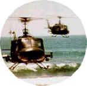

|
The Epic Images of Kurosawa
By Stu Kobak
Click on thumbnails for larger images
The crystal branches of the trees reflected flecks of moonlight recalling images of richly
produced Hollywood fantasies of a bygone era. The ice storm of 1977 had created a natural
wonderland, an anomalous rain softly laying droplets upon the ice cold trees of Long
Island, immediately transforming into a captivating coating of ice. As my pregnant wife
and I cruised the tree-lined roads drinking in the spectacle of nature, we continued
negotiations for the naming of our first child. I campaigned for the name Akira if we had
a son, to honor the master Japanese film director Akira Kurosawa. Such was the respect I
had for this giant of a filmmaker. And this, even before the incredible accomplishments of
Kagemusha and Ran. Other considerations prevailed: our first born was
named Alexander. Since my first introduction to Kurosawa at a Japanese film festival
playing Hidden Fortress, his films have continued to grow in stature for me. They
have survived the test of time and repeated viewings. I've probably seen The Seven
Samurai 10 or 11 times, and now my son Alex has come to share the experience of
Kurosawa. I would also like to share some of the master's work with you.
Kurosawa is held in such high esteem by his peers and film
critics alike that in Sight and Sound Magazine's top ten film survey of 250 critics and
directors, an astonishing ten different films by Kurosawa were named, a testament to the
amazing depth of his screen output.
"Blow winds, and crack your cheeks! Rage! Blow!" rants
Shakespeare's King Lear.
Akira Kurosawa's use of nature's elements is an intersection crossed by many of his films.
Ran
is the filmmaker's adaptation of the Lear tale brought to stunning pictorial life in
feudal Japan. Indeed, the wind rages, fog and smoke engulf Kurosawa's Hidetora Ichimonji,
the Japanese Lear; spikes of flames strike his flesh, foreboding storm clouds shadow his
every move and shards of rain whip matted clumps of white hair across his face.
Thirty years separate Ran from Kurosawa's first epic
Samurai film The Seven Samurai. Together they are the brilliant epic bookends of
the director's oeuvre. Hidden Fortress, made right after the success of
The
Seven Samurai, marks Kurosawa's first excursion into a light-hearted treatment of
historical Japan and the Samurai. Throne of Blood and Ran are the director's
two excursions into the realm of Shakespeare. A fine representation of the director's
action style, this quartet of films shows off the best of Kurosawa's action style.
The Seven Samurai, arguably Kurosawa's greatest film, is
tour-de-force storytelling, driven by superb editing and photography. A small village has
been looted and pillaged by a hoard of bandits too many times. The village elder advises
that Samurai be hired to defend the village. During the period of Japanese civil wars,
many battles between feuding Lords had left Samurai warriors without a master. The farmers
are able to recruit a group of these unattached Samurai, called ronin, to defend their
village.
In Kurosawa's hands, this simple story metamorphoses into a
symphony of film. The opening introduces the bandits, accompanied on the soundtrack by
their specific theme music. The string of outlaw horsemen is exquisitely framed against
the horizon, a compositional signature with which the viewer is treated throughout these
Samurai epics.
Deciding to await the new harvest before striking again, the
marauders thunder away, as a farmer overhearing them rises from a nearby bush. From a
close-up of the farmer, Kurosawa employs his first use of the wipe, a technique whereby a
new frame pans across the screen over the existing image to create a transition in time
and place. This was used frequently in the three black and white film discussed here,
while in Ran the editing was confined to simple cuts.
In the village movement, Kurosawa's "symphony"
introduces the farmers and their theme music, as well as the mill where the village elder
resides, accompanied by its own pounding theme. The next lyrical movement is the farmers
finding their Samurai in the provincial city. In a brilliantly edited sequence, a parade
of passing ronin walking through the city streets are scrutinized by the farmers, who hope
to approach some likely candidates for assistance. The director's rapid montage cuts
create an intense feeling of action and drama that transcends the borders of the screen.
People pass in front of the farmers, obscuring their view, adding a dynamic depth to these
scenes.
As written by Fumio Hayasaka, a collaborator on Kurosawa's six
previous features, the music representing the Samurai is, appropriately the most
memorable. It ranges from light-hearted to stirring. Hayasaka died before completing work
on the next Kurosawa project.
Kanbei, played with cool élan by Takeshi Shimura, is the first Samurai to accept the farmers' proposal.
His strength and
integrity become a magnet for the other Samurai, who acknowledge him as their leader.
Kurosawa patiently introduces each of the Samurai, giving them time to bond amongst
themselves and with the audience. Although the farmers share these moments with the
Samurai, they never really become part of their world.
The Samurai bring very different styles, personalities and
abilities to the group. The seventh Samurai, Kikuchiyo, as created on the screen by
Toshiro Mifune,
stands apart from the other Samurai with his scruffy appearance and
crude manner. It is natural that Kikuchiyo is represented in the score with his own theme
music. On the surface, Kikuchiyo is an unsavory character that the other Samurai refuse to
accept. Over the course of the film, we learn more about Kikuchiyo than any of the other
characters. He serves as bridge between the farmers and the Samurai, ultimately revealing
the most meaningful truths of the film.
Under Kurosawa's sensitive guidance, Mifune displays a
range of
emotion achieved only by the greatest practitioners of his art. The scene in which he
bares his soul to the other Samurai ranks with the most powerful and memorable screen
performances. The scene has never failed to stir my deepest feelings; even now, as I
recall it in writing, the close-up of Mifune clad in the armor of a fallen Samurai clearly
composes itself within the film banks of my memory.
A short transitional passage details Kikuchiyo's acceptance into
the group. Spiced with humor, the Samurai's journey to the village is depicted in cavalier
fashion, sprightly light theme music adding to the pleasure of the journey.
The third major movement of the film begins in the village: the
Samurai begin training the farmers to withstand the coming onslaught of the bandit
marauders. The farmers and the Samurai are able to learn a great deal about one another
during this process. The drama is interlaced with comic moments as anticipation builds
toward the coming confrontation.
In the final major section of this symphonic film, attacking
horsemen crash through the driving rain into the village. Pursued by frantic farmers
awkwardly brandishing bamboo spears, the manic action is intensified by
fierce editing
and brilliant use of real sound. In these final battle scenes, Kurosawa eliminates
music, successfully heightening the action's impact. Mifune dominates this final
battle sequence with the same raw power he has infused in the film from his first
appearance. He has become a true Samurai, a fearless inspiration to his fellows. By
battle's end, the robbers have been defeated at dear cost to the Samurai.
The film concludes in a short capitulating sequence. The village
has returned to normal life with the harvesting of the rice crop. A villager pounds a
drum, beating a ritual chant to express the jubilation of the farmers. The surviving
Samurai, departing the village, survey the scene. They are all but forgotten by the
farmers, yet they have left compatriots behind in four graves. Kanbei movingly turns to
his friend Shichiroji and says "We've lost again." Shichiroji, surprised, looks
questioningly at Kanbei, who adds "The farmers are the winners. Not us." The
wind whips a banner representing The Seven Samurai which is planted atop the
graves. Strains of the martial Samurai theme dominate the soundtrack as the picture fades
out.
Kurosawa's screen compositions are legendary. Extraordinary
camera angles are employed to stretch the screen's rectangularity, at the same time adding
great depth to the images. Every portion of the film's frame is utilized by Kurosawa,
displaying his supreme compositional gift. Deep focus techniques are in constant use so
that each painstaking detail in the frame is clearly defined.
Kurosawa's ability to combine the intimacies of character
revelation with exciting action sequences is a quality that places him at the top of his
profession. His devotion to detail and stubborn faith in his own vision has served his art
well, but it has not made his position within the corporate society comfortable. He has
often found it next to impossible to find financial support for his film projects in his
native Japan.
Throne of Blood is more compact than the
other Kurosawa Samurai epics. It is the definitive screen adaptation of Shakespeare's
Macbeth, very focused and direct. The film is a dark brew of ingredients in which the sun
virtually never appears. Fog is so stunningly used that in several scenes it successfully
substitutes for a dissolve. Lightning, thunder, rain and wind drive the characters to
their ordained destinies.
The formality of structure in Throne of Blood is
established immediately by a chorus chanting a prologue. The musical score features
extensive use of the Noh (traditional, highly stylized Japanese drama)
flute. Kurosawa
relentlessly propels this tale from opening chorus to a parallel device at the end.
Toshiro Mifiune is Washizu (Macbeth), again brilliant under the
direction of Kurosawa, for whom he has acted in 16 films. His facial expressions early on
indicate self-conscious horror at his own actions and what is sure to follow as a
consequence. This aspect of Mifune's performance plants the seed for Tatsuya Nakadai's
portrayal of Hidetora in Ran some three decades later. Washizu's demise is
strikingly realized as his own men turn on him with their bows, pursuing him with
waves of arrows. To the left of him and to the right of him, the arrows strike. Close-ups
of Mifune are spectacular. This is one of the screens greatest death scenes. In fact,
off-screen archers were actually shooting arrows within inches of Mifune. The
range of
fear on Mifune's face was perhaps closer to reality than the actor might like to admit.
The forceful editing of Throne of Blood,
as in The
Seven Samurai, is a major factor to the success of the film. The horizontal wipe is
again used extensively, with an interesting variation. More often than not the wipe
moves from a scene of pale gray and white tones to a highly contrasted dark scene. Full
appreciation of Kurosawa's use of the technique requires multiple viewings. In re-running
a sequence, one realizes that Kurosawa's wipes often follow the direction and movement of
his characters, prefiguring a similar movement in the ensuing scene. In some cases the
movement is from the reverse direction. While the technique is considered dated by many, I
have never seen it used with greater success. George Lucas, who has acknowledged Kurosawa
as an inspirational film figure, uses the wipe frequently in the Star Wars trilogy.
In a astounding sequence of editing, we are introduced to
Washizu. Signature Kurosawa elements representing turmoil are used to heighten the
frenetic pace of this action sequence. The windblown rain rages, accompanied by flashes of
lightning and cannon volleys of thunder. The hoofbeats of the horses of Captains Washizu
and Miki (Banquo) pound threateningly through the forest to the Cobweb Castle, as
incongruous spears of light penetrate the tall trees. Kurosawa uses the moments of
lightning to trigger his cuts. A close shot of Washizu and Miki flashes to a long shot
through the trees, everything remaining in focus; another blast of lightning coincides
with a cut to a close-up of the pair, then a series of cuts from rider to the other until
the two finally fade into the forest together, lost in a maze of trails that lead to a
witch, chanting the inevitable fate of the two captains riding the ladder to power.
Asaji, Washizu's wife, is a thoroughly malicious adaptation of
Lady Macbeth. Where Washizu hesitates, Asaji's path to evil is unwavering. Actress Isuzu
Yamada creates this malevolent mistress of ambition in icy tones. Again, Throne of
Blood relates directly to Ran in the creation of Lady Kaede, a direct
descendant of and a more fully realized character than Asaji.
Few images in Throne of Blood rise to the epic grandeur
achieved in Seven Samurai, Ran or Hidden Fortress. Mifune's death scene is
comparable in scale, as are the long camera views of Lord Tsuzuki's (Duncan)
approach to the
North Castle domain of Washizu and the battle between the warriors of Washizu and Tsuzuki
after the latter is assassinated.
Kurosawa composes Throne of Blood for the Academy
aperture(1.37)as in The Seven Samurai. Camera angles again create the illusion of a
wider screen format. Deep focus techniques are used through extensive use of small camera
apertures. Even telephoto shots crisply illuminate the details that Kurosawa insists
upon. Authenticity of sets and costumes placed great demands on production collaborators,
often throwing Kurosawa into conflict with the Japanese film studios.
The source material from which the laser disc is mastered may be
the best available to Voyager, but it is unacceptable. The Scenes of Washizu and Miki
adrift in the fog are laden with scratches, and the fog itself, no doubt difficult to
transfer, has an irritating instability manifested by flickering. Many scenes are
disturbed by white speckles. However, the worst technical problem last for virtually the
entire final reel of the film: a thin, white stationery line dominates the left third of
the film.
Hidden Fortress was a landmark film for Kurosawa. For the
first time he employed the widescreen process. The compositions in his earlier films were
crying out for the additional freedom of the wider screen and one can sense the director's
personal joy in experimenting with the new format. Except for the intimate Dodes'ka-den,
the master never again composed in the 1.33 aspect ratio. His full use of the wide screen
results in characters facing one another from the extremes off the picture.
Esthetic and symbolic balances are laid out upon this vast rectangular
plain. Interesting camera angles are maintained, but wide group compositions are shot from
a more direct point of view.
Structured as a traditional adventure story, Hidden Fortress
is surely the most light-hearted of Kurosawa's epic films, although the story of a
princess escorted through enemy territory also contains messages about the horror and
senselessness of war. Kurosawa's opening image is a war-ravaged plain, wind sweeping dust
across the wide screen. Two farmers, refugees of defeated armies, pawns in the power plays
dominating the country, walk through the desolate landscape lamenting the war and their
misfortune. Suddenly, a stray Samurai pursued by enemy horsemen bursts through their
plaintive banter . As he is chopped down ruthlessly, the horror of war is written on a
close-up of his face. The dead Samurai lies upon the ground, dust swirling, his arm frozen
upright in a hideous sculpture.
When the two bickering farmers are captured in separate
incidents, they are relegated to slave labor. Kurosawa fills the screen with massive
numbers of soldiers and slaves, traveling in long, lateral movements across the screen.
The sequence of their captivity and subsequent escape are crowd spectaculars.
Composed diagonally from corner to corner of the wide screen, the weaving
movement of the rebelling slave laborers recalls a ceremonial Chinese dragon celebrating
the new year. The director's visual fascination with massive staircases is realized in a
number of these incredibly photographed scenes; by positioning his camera at the base of a
long stairway, in the most memorable of these images, he heightens the impact of the
fleeing captives sweeping down the stone steps directly into the camera. The stairs
represent the extremes at which Kurosawa's characters exist. The imagery later recurs in
Ran,
except that the focus is on the solitary figure of the mentally destitute Hidetora
Ichimonji.
Kurosawa's flawless use of deep focus camera techniques is
illustrated elegantly in the initial appearance of star Toshiro Mifune, playing the
delightfully ruthless General Rokurota Makabe. Farmers Tahei and Matakishi are searching
through a mountain brook and its surrounding boulders for more gold-filled bamboo shafts.
While they fight greedily after finding a second shaft, the viewer is
aware of another presence, a sharply focused miniature of Mifune, precisely framed in a
hollow between the boulders, hands on hips in an imperious stance. The wide screen
stretched to its full dimension, perfect employment of deep focus, and an extraordinary
sense of composition--all these elements of Kurosawa mastery are exhibited in a single
frame.
In a total departure from the broad portrayal of Kikuchiyo in
The
Seven Samurai, Mifune's Rokurota is a character of coldly calculated strength,
dominated by a sense of honor and duty. Mifune's repeated presence in Kurosawa films is
not simply a reprisal of prior work, but remains fresh and original time after time
The Voyager Criterion Collection laser disc of Hidden Fortress
replicates the exquisite black and white photography achieved by Kurosawa and
cinematographer Kazuo Yamasaki. It is interesting to note that although Kurosawa has used
a variety of cinematographers over the many decades of his career, the images are always
stamped with the Kurosawa look, emphasizing powerful screen compositions. The subtle
range of grays is accurate. Each detail, obsessively captured by the director, is
duplicated clearly on the laser disc pressing. Focus is consistently sharp. Source
material for Hidden Fortress is in pristine condition. The image is presented in
approximately a 2:1 aspect ratio while the film was shot in 2.35 Tohoscope. While few
images are compromised significantly by the cropping, there are a number of instances
where major characters on the extremes of the screen are partially cut off, resulting in a
violation of Kurosawa's perfectionist composition. White English titles appear in the
bottom black band of the letterboxed image.
The musical scores for both Hidden Fortress and
Throne
of Blood were written by Masaru Sato, who worked with Kurosawa on nine films, ending
with Red Beard in 1965. Unlike the solemnly dominent and often grating score of
Throne
of Blood, Hidden Fortress features a lighter tone.
Hidden Fortress is especially interesting in comparison
with these other three epics since it establishes the range of Kurosawa and his star
Toshiro Mifune. In his body of work, Kurosawa has employed the same talented people time
and again. Unlike Mifune, who erupted to stardom in his first screen role in Kurosawa's
Drunken Angel, Tatsuya Nakadai, the glorious star of Ran, made his first fleeting
screen appearance as one of the passing Ronin scrutinized by the farmers in The Seven
Samurai. It was seven years before he again appeared for Kurosawa, this time in a
featured role in Yojimbo. He has been featured or starred in five Kurosawa films,
culminating in the magnificent interpretation of Hidetora Ichimonji in Ran. The
haunting expressions of desolation captured on his face and every movement of his body are
strokes of acting genius.
The Japanese character "Ran" translates in
English to chaos. The meticulous compositions at the outset of Ran represent the
harmony before Hidetora abdicates his rule over the house of Ichimonji to his eldest son
Taro. As the film progresses, this sense of family harmony will never again recur.
Ran differs from the other epic Kurosawa films in
technical style. There are no wipes, no fades, simply montage cuts. However, the use of
color adds a new dimension. The beautiful palette with which Kurosawa imbues this film
plays perfectly against the themes of madness and betrayal. Each frame is a painting,
executed in bold strokes of contrast. Kurosawa actually produced a startling series of
lithographs from his story boards for Ran. Reproductions of many of these have
been collected in a book published along with the screenplay. Viewing the lithographs
alongside the film is revelatory. Characters, right down to costume and make-up, emerge
from paper to screen.
Kurosawa again weaves a wonderful musical score into the fabric
of the action. As youngest son Saburo's troops evacuate the castle after their master's
banishment, the pounding horses hoofs fuse with the music to form a single element of
immense power. The majesty of epic movement is gracefully expressed as the horses are
followed down the steps by foot soldiers, their jingling armor another element in the
exciting musical composition. Blue and yellow banners splash contrasting color against the
pale grays of the castle, completing the epic image.
Composer Toru Takemitsu infuses the score with sound of mocking
cicadas as Hidetora's rule is dismantled bit by bit. The sound is like wave upon wave of
arrows, slicing through the air, quivering in the great Lord. Indeed, they foreshadow the
coming decimation of Hidetora's retainers.
Thirty years after choosing to eliminate the music from the
climactic encounter in The Seven Samurai, Kurosawa presents a large segment of the
culminating battle
in Ran accompanied only by music. The silent montage of Hidetora's entourage is commented upon
by the solemn score. Individual frames of the montage offer one stunning depiction of
violence after another: a multitude of arrows protrudes from a fallen Samurai; two of
Hidetora's concubines perform seppuku upon each other's outstretched blade; bloody bodies
piled in death's repose; a quintet of Hidetora's battle weary Samurai stand upon the
castle steps in hopeless defense of their Lord; a wounded Samurai sits motionless on the
ground holding his recently severed arm; riders and foot soldiers, shrouded in dust
created by their massive movements charge laterally across the screen. These images of
unbelievable power run uninterrupted for almost six minutes until broken by the sound of a
single shot unseating Hidetora's son Taro from his horse. The battle frenzy is sustained
for a full fifteen minutes in a total assault on the senses.
The
battle concludes as Hidetora glides trance-like down the steps of the castle. Horror is
etched in his painful, vacuous stare. All the battle elements surround his walk through
the troops of his two treacherous sons; fog, fluttering banners, arrows, blood, and
always, the swirling wind. He exits through the gates of the castle into a storm brewing
on the surrounding plain. High grasses whip in the wind as the totally distracted Hidetora
picks wild flowers in the storm.
Lady Kaede is the other great character of Ran. The
embodiment of evil, her love scene with her dead husband's brother borders on the
supernatural. Oozing malice, Lady Kaede is captured superbly by Mieko Harada. Her
beheading by a single stroke of General Kurogane's blade is the perfectly chosen violent
depiction of her demise, an explosion of blood covering the backdrop of the scene.
Kurosawa's accomplishments as a film director through six decades
serve as an inspiration to filmmakers and film lovers alike. These four films of the more
than thirty he has directed, represent only one aspect of a brilliant career.
|
|
The
Feature Archive
has articles ranging from Akira
Kurosawa to Blonde
Bimbos, The
Heistmasters and Frank
Darabont.

Click on the image above for Hollywood's
movie take on Vietnam.
Check out the Movie
Poster Archive for short bios and images of Susan
Hayward, Kirk Douglas, Katharine Hepburn and many more. This month's
featured star is Tyrone
Power

Imaging Science Foundation promotes proper
standards in home theater viewing. ISF trained technicians offer
monitor calibration services to consumers. The difference in a
properly calibrated monitor can be astounding. Click on the image to
find an ISF member near you.
Home
Theater Reference Reviewing System
When you read a DVD review it's of utmost importance to know what
equipment is being used to evaluate quality. Click on the projectors
to find out more.

DVD
Verdict
They may
be judgmental, but that's the point, isn't it. Lots of DVD reviews
plus news and more.
Click on the link to visit the judge's chambers.
More than just talk, one of the friendly and helpful places on
the web where home theater views are exchanged. You might find a
laugh or two as well.
|